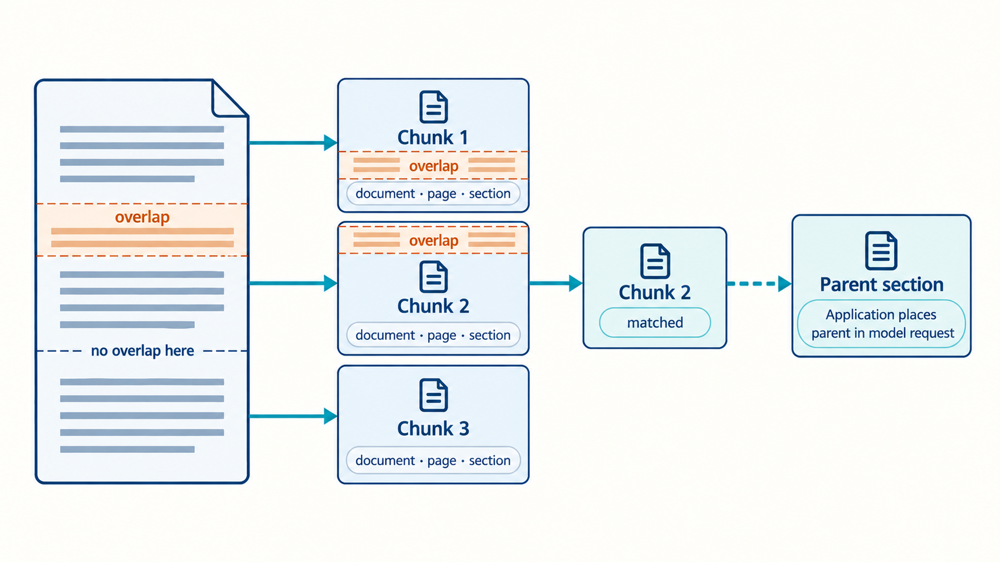
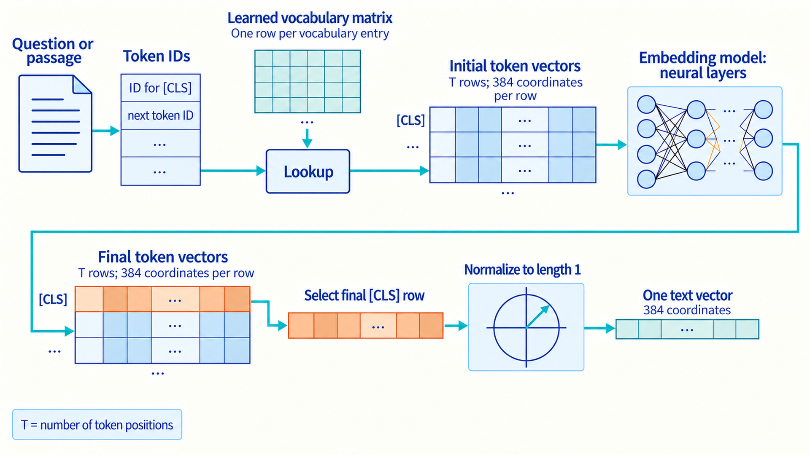
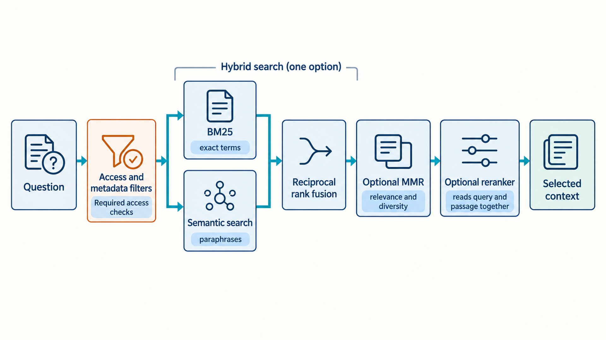

6 RAG: preparing and retrieving external evidence
Many product questions depend on private, detailed, or changing facts that are absent from model weights. A retrieval-augmented generation (RAG) system prepares source documents for search, selects relevant passages for each request, and gives those passages to the model before it generates an answer.
![An earlier eight-section map has labels that predate the current section merge. Missing/stale evidence calls for changed supplied evidence; present but misused evidence may call for prompt, model, workflow or training changes. Offline parsing, chunking, embedding and indexing feed online retrieval. Neutral source-ID tags continue through generation, answer and application support checks. Parsing/source identity and chunk metadata precede schematic vectors q=(0.6,0.8), d1=(0.8,0.6), d2=(3,1), with dot and cosine rankings preserved and not-to-scale qualification. Required access/hard metadata filters precede a one-option BM25/semantic/RRF hybrid group and optional MMR/reranking. The model's insufficient-evidence reply is conditional and prescribed, not guaranteed. FinanceBench returns answer, cited pages and trace.](../assets/fig-m1-c06-f01.png)
The pipeline separates source preparation from answering each request.
6.1 When retrieval is useful
Retrieval is useful when an answer needs information the model has not learned, information that may have changed since training, or details that must be checked against specific sources. Private customer records, recent policy changes, and changing financial values are examples.
RAG retrieves external evidence at request time and places it in the model’s context so the answer can be grounded in those sources.1 The model still generates the language, while the retrieval system selects the evidence.
RAG can lower unsupported-answer risk when relevant evidence is retrieved and the generation step is instructed to use it. Evaluation shows whether it does.
RAG alternatives and additions
- Direct prompting: can replace retrieval when the application already has the needed source text and can fit it, with the instructions, in the current request.
- Long-context prompting: supplies more document text directly in that request, within the model’s input limit. The model uses its existing weights to respond.
- Cache-augmented generation (CAG): reuses prepared attention state for a fixed document prefix. It can replace passage search for repeated questions over a stable collection that fits usable context.2
- Knowledge-augmented generation (KAG): combines retrieval with linked facts, supporting passages, and planned reasoning steps. It extends passage retrieval rather than removing retrieval (Section 6.5).3
- Fine-tuning: changes model weights through further training on examples. It can change task behavior, such as how the model formats a response.
These approaches can be combined. A cached prefix can supply stable text while retrieval supplies other information.
Table 6.1: RAG, CAG, KAG, prompting and fine-tuning differ in how they supply information or change model weights.
| Method | Changes | Strong fit | Main limitation |
|---|---|---|---|
| Prompting | Current request text | Task framing, output structure, a few supplied facts | Supplied facts must fit the request and be refreshed |
| RAG | Request-time context | Current, private, citable, or large document collections | Retrieval and context failures become new system risks |
| Fine-tuning | Model weights | Behavior, style, task specialization, repeated patterns | Poor fit for frequently changing factual storage |
| Long-context prompting | One large current input | Small document collection or one-off analysis | Cost, latency, attention dilution, and access filtering |
| CAG | Reused attention state for a fixed document prefix | Repeated questions over a stable collection that fits usable context | Cache storage, changed documents or permissions, and long-context answer quality |
| KAG (Section 6.5) | Linked facts and source passages with planned retrieval and reasoning | Questions requiring related facts and operations on their results | Extraction or plan errors and extra preparation and solving work |
A stable set of documents may be used to answer many different questions. Reprocessing the same text for each question repeats work. Chan et al.’s CAG places the documents before the question as a fixed prefix and reuses the model’s prepared state for that prefix. A key-value (KV) cache stores numeric attention state for tokens the model has already processed.4
Preparation computes and saves this state. Each independent question starts from the document prefix rather than from the state left by the previous question and answer. The model processes the new question and generates an answer while still attending to the documents. Reuse avoids computing the prefix from scratch. The model weights stay fixed, and the saved state is not a saved answer.
CAG suits a document set that fits within usable context and is reused often enough to justify preparation and cache storage. Instructions, the question and any required output reserve also need room (Chapter 3). A cache built from old documents or a different model cannot be assumed valid. The application must exclude documents the caller may not access. Long-context quality, cache memory and generation costs still need measurement. A system can combine a cached document prefix with retrieval for other information.
Decision rule
Missing or stale facts require a change to the evidence supplied with the request. If the evidence is present but the model applies the task incorrectly, the remedy may involve the prompt, model, workflow, or training. Corpus size alone does not justify fine-tuning.
6.2 Offline ingestion and online answering
For passage retrieval, the application prepares sources for search and finds the passages relevant to each question. Offline ingestion prepares source documents for search before requests arrive, and runs again when sources change. Online answering handles each incoming request by finding evidence and using it to generate and check an answer. This separation avoids repeating document preparation for every question.
Offline ingestion parses source documents. Before indexing, it splits text into passages and retains structural metadata. A retriever is the search component that takes a query and returns candidate passages from the document collection. At runtime, the online pipeline turns the user request into a search query, retrieves candidate passages, and may rerank them. The application places the selected passages in model context. The shortened implementation in Section 6.7 checks citation IDs. Chapter 7 adds evaluation of whether the generated claims are supported by the supplied evidence.
![Two lanes. Offline ingestion, re-run when sources change or are deleted: source documents, parse, chunk with metadata, embed for vector search, index. An arrow from the index carries candidate chunks and source IDs to the retrieve step of the online lane. Online answering per request: user request, search query, retrieve, optional rerank, the application places passages in context, the model writes an answer with citations, the application checks support. A tag icon marks every card that keeps a source ID, which is every card except the user request and the search query.](../assets/fig-m1-c06-f03.png)
Evidence can be lost during these preparation or retrieval stages, or misused during answer generation.
Locating a failure requires knowing which sources were available, how they were searched, and which source each retrieved chunk came from:
Corpus: The authorized collection of documents or records available to the retrieval system.
Index: A data structure that maps query representations to candidate source units. It may be lexical, vector-based, structured, or hybrid.
Metadata: Source identity and attributes stored with a chunk, such as document, page, section, date, company, permission, or content type.
The two execution paths must preserve complementary evidence and a shared source identity:
- Offline version evidence: parser, chunker, embedding model, index build time, source hashes, and access labels.
- Online request evidence: query text, filters, retrieved identifiers and scores, reranker version, selected context, model output, and citations.
- Data requirement: source identifiers must survive every stage so a generated citation can be checked against an actual retrieved unit.
The separation creates distinct service objectives. Offline quality concerns completeness, reproducibility, freshness, and deletion propagation. Online quality concerns retrieval relevance, authorization, latency, context capacity, and grounded generation.
Some methods also prepare linked facts and connections to their supporting passages. KAG in Section 6.5 adds these records to passage indexing.
6.3 Parsing risks and source tracking
The offline phase begins with authorized source files and must produce searchable text together with the document, page, and section where each piece came from. A parser can silently scramble multi-column pages, headers, tables, or right-to-left text, creating retrieval failures before embeddings are involved. Source inspection and layout-aware parsing precede chunking.
Ingestion must preserve page boundaries and document identifiers, along with document layout hierarchies when layout carries meaning. A page loader alone may not recover those hierarchies. PDF text extraction is not equivalent to reading order: visual columns, footnotes, tables, and scanned images can produce interleaved or missing text. Optical Character Recognition (OCR) converts text in page images into searchable text. Image-only pages need this conversion for text retrieval, and a layout-aware parser may be needed to recover the reading order of complex documents.
- Document: In common RAG libraries, a text payload plus metadata. Depending on the loader, it represents a complete file, a single page, a section, or an individual record.
Parsing review
A parsing review compares raw document bytes, extracted text, page images, and structural metadata before chunk creation. It is useful when the reference documents contain scans, multiple columns, tables, headers, footers, or mixed reading directions.
The review compares extracted text with representative rendered pages, measures empty or unusually short pages, and checks that page and section identifiers survive extraction. A retriever cannot return evidence the parser omitted or corrupted.
Why page images matter: Extracted text can contain the words from both columns but mix their lines, changing the intended reading order. Comparing that text with the page image lets the reviewer check the order and the information conveyed by diagrams.
Preprocessing removes running page headers, navigation artifacts, and boilerplate, but must not remove qualifiers, measurement units, dates, or section headings. Every transformation should be reproducible from the original source and recorded in the index build manifest.
The parsing-review results and parser version become part of the ingestion record. Later retrieval experiments can then distinguish a search failure from evidence already lost during ingestion.
6.4 Offline preparation
Offline preparation turns parsed text into chunks, their vectors, and a searchable index. Parsing has supplied text with source boundaries and reading order. Retrieval rarely returns an entire long document. Instead, it needs units small enough to rank and large enough to preserve meaning. Chunking chooses those units, overlap, and metadata by the structure of the reference data and the questions users ask.
Chunk: The source unit placed in the index and later returned as evidence. Fixed token windows are simple and predictable. Recursive character splitting tries larger separators, such as blank lines, before smaller ones, such as sentence ends or spaces. Structure-aware splitting uses headings, paragraphs, table rows, code functions, or legal clauses. Semantic splitting uses changes in embedding similarity as candidate boundaries.5
The chunking figure below contrasts fixed splits with expansion from a matched child chunk to its parent section.

Chunk size determines whether one retrieved unit contains the full answer, irrelevant neighboring text, or only an incomplete fragment. Chen et al.6 found that single-claim, or proposition-level, units improved retrieval in their experiments, but the study does not establish one best unit for every corpus. Representative questions can compare sentence, proposition, paragraph, table, figure, section, overlap, and parent-expansion choices.
Chunk overlap copies text around a split into adjacent chunks. It can preserve a crossing claim when the copied text covers the necessary context. Too much overlap increases index size and returns near-duplicates that crowd the context. Parent-child retrieval stores small units for matching but expands a selected child to a larger parent section for generation.7
Evidence hit at k (Hit@k) records whether at least one labeled supporting unit appears among the first k retrieved results. The table uses it only as an early diagnostic name. Section 7.2 defines the formula and its limits.
Table 6.2: Chunk and retrieval settings trade evidence completeness against noise, cost, and duplication.
| Chunk decision | Smaller value tends to | Larger value tends to | What to measure |
|---|---|---|---|
| Chunk size | Improve targeting but risk missing context | More context with additional noise and tokens | Evidence hit@k and grounded answer quality |
| Overlap | Reduce duplicates but expose boundary loss | More boundary preservation with duplicated evidence | Tokens duplicated across chunks by overlap; evidence hit@k; index size |
| Top-k retrieval | Lower context cost but miss evidence | Raise recall but increase noise | Recall/hit@k, faithfulness, latency |
| Parent expansion | Compact evidence set | Restore section context | Support completeness and prompt size |
Metadata is part of the chunk
Chunk records should retain document name, page, section path, date, and access attributes beside the text. Private-data retrieval must preserve the attributes needed to enforce access. Trying to reconstruct that information after retrieval is unreliable and can create false citations.
Chunks define the evidence units available for ranking. Exact words may differ between a user question and a relevant chunk, so literal matching alone can miss paraphrases. Search can also compare learned numerical representations of the question and passages.
Embedding models map a question or passage to a vector, an ordered list of numbers used for similarity search. A model’s tokenizer first converts text into token IDs. The model processes learned token vectors through its neural network and returns one vector for the whole text it received. Tokenization supplies the IDs. The embedding model computes the text representation.
In this RAG example, the text embedding model produces the search vectors. The main LLM is a separate generative language model that receives retrieved passage text and produces an answer. Both are multilayer neural networks with separate learned parameters. Search uses the embedding model’s numerical representation; answering uses the main LLM’s generated continuation.
Each coordinate of the returned vector is one number computed by the trained network. Its learned parameters determine those calculations. One way to train a retrieval model is to use related and unrelated question-passage pairs to adjust those parameters. This training encourages higher similarity scores for relevant pairs. Their relevance is represented through the combination of coordinates.
The number of coordinates is fixed by the chosen model. For example, BAAI/bge-small-en-v1.5 is an English text embedding model that returns 384-coordinate vectors.8 A longer input creates more token positions for the model to process, up to its input limit; its returned text vector still has 384 coordinates.
Model choice. An embedding model must suit the texts being searched and the resources available to run it. The comparison covers:
- Language and subject matter: whether questions and relevant passages receive useful similarity scores, including domain terms, identifiers, code, and numbers.
- Input length: whether the model can process the required text without losing supporting information when text is cut off at the model’s input limit.
- Retrieval quality: how often known supporting passages appear among the returned candidates, using the same questions and document collection for each model.
- Computation: time to embed queries and documents, memory use, and local running or API costs.
The BEIR9 retrieval benchmark reports large differences across retrieval datasets. Its results support testing on the intended questions and documents. Section 6.7 uses BAAI/bge-small-en-v1.5 as an example choice; it has not been measured here as the best model on FinanceBench.
Each comparison uses matching query and document embedding versions within its index. When an embedding change alters the representation, re-embedding every chunk and rebuilding the index is the safe default. Mixing old and new vectors instead needs documented compatibility and testing on the retrieval task. Equal vector length alone does not establish compatibility.
Indexing. During preparation, the application computes a vector for each chunk and stores it in a vector index. Each record ID links a chunk vector to stored text and metadata. A vector database stores the vectors with that text and metadata. The prepared index and linked records are inputs to online retrieval.
Optional: Inside an embedding model
Each token ID selects a row in an embedding matrix stored inside the model. The matrix has one row per vocabulary entry, and each row contains that token’s initial vector. Its numbers are learned during training.
Neural network layers transform these initial vectors. A layer can multiply input coordinates by learned parameters and add the products. Attention mixes information from other token positions. Repeating transformations produces a final vector at each position. A text embedding model selects or combines these vectors to return one text vector. For text generation, an output layer instead converts the representation at the current position into scores for vocabulary tokens. Choosing a token and repeating the computation produces the continuation described in Chapter 1.
BGE has 384 coordinates at each token position. It starts the sequence with a special token, [CLS], whose vector the network updates using the other input tokens. BGE selects the final vector at this position, then normalizes it to length one.10 The notation \(\mathbb{R}^{384}\) means the space of vectors with 384 real-valued coordinates. In Figure 6.4, token positions are rows and coordinates are columns.

Other models may average the final token vectors instead. For two illustrative vectors, \(a = (1, 2)\) and \(b = (3, 4)\):
- Averaging matching coordinates gives \((2, 3)\), keeping two coordinates.
- Concatenation joins the vectors end to end, giving \((1, 2, 3, 4)\) with four coordinates.
Selecting one token vector or averaging them preserves their width. Concatenating all token vectors would make the text vector’s width depend on the number of processed tokens.
The following diagram previews one online retrieval configuration. It separates required access checks from optional search and ranking methods. Section 6.5 explains those methods.

6.5 Online retrieval
Offline preparation has produced the index and linked chunk records. Online retrieval uses them to find passages for each new question. Access checks restrict retrieval to information the caller may use.
Vector search compares a query vector with stored passage vectors using the configured similarity or distance measure. For each new question, this example computes a query vector with the same model version used to prepare the stored chunk vectors.
The model’s conventions determine how each kind of input is prepared. For short queries, BGE recommends adding text that identifies the input as a search query. Passage input uses no such added text.11 Its query and passage vectors occupy the representation used for scoring. Retrieval training aims to place a question near its supporting passages, even when their wording differs.
The diagram follows the prepared passage vectors and each question’s vector through search and lookup to the main LLM. Its offline lane uses the FinanceBench setup in Section 6.7: RecursiveCharacterTextSplitter from langchain-text-splitters divides parsed PDF-page text into chunks before embedding. The dashed attachment shows an optional model configuration: Low-Rank Adaptation (LoRA) adapts selected model weights to a task, and a LoRA adapter stores the learned updates. Section 6.7 leaves the generation model’s configuration to the application.
![In the FinanceBench offline preparation lane, parsed PDF pages feed chunking with RecursiveCharacterTextSplitter from langchain-text-splitters, then passage chunks. Those chunks feed both the shared embedding model and stored chunk text plus metadata. Passage vectors enter the vector index, which is linked to the text store by record ID. The question uses the lower ports of the same embedding model to produce a query vector. Query vector and saved index feed vector search; candidate IDs and stored text feed application lookup. Candidate passages are selected, combined with the original question, and supplied to the separate main LLM for an answer. One optional LoRA adapter has a nondirectional dashed configuration link. No data connectors cross.](../assets/fig-m1-c06-f08.png)
Search returns record IDs for candidate chunk vectors and a score or distance for each one. The application uses those IDs to look up candidate passage text and metadata from the store prepared offline.
Suppose a visitor asks, “Where can I park?” and an indexed passage says, “Visitor parking is beside the main entrance.” The wording differs, but the passage answers the question. If search returns its record ID, lookup recovers the sentence and its source metadata. The selection step can then give that text to the main LLM.
The score measures how the query vector compares with a candidate chunk vector. Search uses it to rank candidate vectors and return their linked passages. Whether a passage answers the question and whether the user may access it require the checks developed later in this section and in Section 6.6.
The dot product and cosine similarity are common scoring rules. For a query vector \(q\) and a chunk vector \(d\) with \(n\) coordinates each, the dot product \(q\cdot d\) multiplies matching coordinates and adds those products. It depends on both vector length and direction.
Cosine similarity divides the dot product by the product of the two vector lengths. This removes the effect of length and compares their directions. Both vectors must be nonzero: a zero vector has no direction, and the formula would divide by zero.
\[ \cos(q,d)=\frac{q\cdot d}{\sqrt{\sum_{j=1}^{n}q_j^2}\sqrt{\sum_{j=1}^{n}d_j^2}} \tag{6.1}\]
Here, \(j\) indexes their coordinates, and each square root gives a vector’s length. Larger values rank first under either dot product or cosine scoring, but the two rules can produce different orders. When both vectors have length one, their dot product equals their cosine similarity.
Euclidean distance is another common choice. It measures the straight-line distance between the two vector endpoints, so smaller values rank first. Squaring this distance preserves that order. Section 6.7’s index returns squared distances. For vectors normalized to length one, ranking by increasing Euclidean distance gives the same order as ranking by decreasing cosine similarity.12 The metric and normalization must suit the embedding model.
Example 6.1: Dot product and cosine rank two chunks differently
Suppose the query and two chunks have these two-dimensional vectors: \(q = (0.6, 0.8)\), \(d_1 = (0.8, 0.6)\), and \(d_2 = (3, 1)\).
First calculate their lengths:
\[\|q\| = \sqrt{0.6^2 + 0.8^2} = \sqrt{1} = 1, \qquad \|d_1\| = \sqrt{0.8^2 + 0.6^2} = 1, \qquad \|d_2\| = \sqrt{3^2 + 1^2} = \sqrt{10}.\]
- Candidate \(d_1\): The dot product is \(q \cdot d_1 = 0.6 \times 0.8 + 0.8 \times 0.6 = 0.96\). Divide it by the product of the two vector lengths to obtain cosine similarity:
\[\cos(q, d_1) = \frac{q \cdot d_1}{\|q\|\,\|d_1\|} = \frac{0.96}{1 \times 1} = 0.96.\]
- Candidate \(d_2\): The dot product is \(q \cdot d_2 = 0.6 \times 3 + 0.8 \times 1 = 2.6\). Its cosine similarity is:
\[\cos(q, d_2) = \frac{q \cdot d_2}{\|q\|\,\|d_2\|} = \frac{2.6}{1 \times \sqrt{10}} \approx 0.82.\]
Result: The raw dot product ranks \(d_2\) first, \(2.6\) against \(0.96\). Cosine similarity ranks \(d_1\) first, \(0.96\) against about \(0.82\).
Interpretation: A dot product depends on both vector length and direction, so an unnormalized vector can rank above a closer match. An index must therefore record whether its vectors are normalized and which distance rule it uses (Section 6.7). The ranking is also valid only within the embedding model’s representation. An identifier or date constraint may still require exact term matching or metadata filtering.
Brute force exact vector search compares the query vector with every indexed chunk vector. Approximate nearest neighbor (ANN) search aims to reduce search work while allowing its results to differ from exact search. Its speed and recall depend on the index structure and search settings, which belong in the retrieval record.
A Hierarchical Navigable Small World (HNSW) graph is one way to organize those already computed chunk vectors for approximate search. It adds links between vectors so search can follow promising neighbors rather than compare the query with every vector. This can reduce comparisons on a large index, at the risk of missing closer vectors. The embedding model still creates both the query and chunk vectors.
Optional: How HNSW searches the vectors
The index stores vectors as graph nodes with neighbor links. Upper layers contain fewer nodes. The bottom layer contains all indexed vectors. Search begins at an upper-layer entry node. It compares the query vector with visited nodes and follows links toward nodes closer to the query, then uses the node reached as an entry into the next layer.
At the bottom layer, search explores several promising candidates and their neighbors, then returns the best chunk IDs and scores or distances it found.13 Unvisited nodes can contain closer vectors. Exploring more candidates costs more comparisons but can improve recall. Building and storing the links also adds preparation work and memory use.
Hybrid search and ranking. A production question might also depend on exact identifiers, dates, and permissions. One embedding score cannot capture all these requirements. Many production systems combine lexical matching, semantic search, metadata filters, diversity selection, and reranking in a staged pipeline. Combining search methods, selecting for diversity, and reranking are optional choices that need evaluation. Required access permissions and hard query constraints must still be enforced.
An access-control list (ACL) records which users or roles may access a resource. The application checks that the caller may access each selected passage before adding its text to the main LLM’s request. Metadata filters can also restrict document date, company, language, or content type.
- BM25: A lexical retrieval function that rewards exact keyword matches. It gives rarer query terms more weight and common terms less weight, while accounting for term frequency and document length.14 A search engine can use an inverted index, which maps each indexed term to the chunks containing it. Query terms select those lists. Stored occurrence counts and chunk lengths provide the data for BM25 scoring.15
- Semantic search: A retrieval method that finds evidence based on conceptual meaning using embeddings.
- Hybrid retrieval: A method that combines lexical and semantic search results to capture both exact terminology and conceptual paraphrases. It can combine ranks or scores calibrated to a common scale.
BM25 can miss paraphrases. Semantic search can miss exact numbers. Hybrid retrieval combines their candidate lists to cover both cases. BM25 and cosine scores use different scales, so a common fusion method, reciprocal rank fusion (RRF), ignores raw scores. Each candidate receives the sum of \(1/(k + \mathrm{rank})\) over the lists in which it appears. Cormack et al. used \(k = 60\).16 This constant is unrelated to the \(k\) in top-k.
Example 6.2: RRF score calculation
For example, suppose a passage ranks first in BM25 and third in semantic search. With the RRF constant 60, its combined score is \(1/61 + 1/63\), about 0.03227. A second passage that ranks second in BM25 but is absent from the semantic list receives \(1/62\), about 0.01613. RRF ranks the first passage higher because both lists contribute. These invented ranks illustrate the calculation, not an observed gain in answer quality.
Search supplies a pool of candidate chunk IDs. RRF can combine the lists from several searches into one ranked pool. Looking up those IDs recovers their text. Even highly ranked passages may repeat the same information, taking context space without adding evidence. Optional MMR selection balances relevance against repetition, while reranking estimates the passages’ relevance again.
Maximal Marginal Relevance (MMR) selects from the retrieved pool by balancing query relevance against similarity to passages already selected. In a vector-based implementation, query-to-chunk similarity supplies relevance, while chunk-to-chunk similarity estimates repetition. A weight controls that trade-off, and a requested result count sets the selection limit. After each selection, the algorithm compares the remaining candidates with the selected set and chooses again by the same rule.17 Depending on the weight, a passage repeating an earlier selection can lose to a still-relevant passage with different information. Selection stops when it reaches the requested count or exhausts the candidates. Exact duplicate removal is a separate check.
A reranker assigns new relevance scores to the passages in that retrieved pool and reorders them. Unlike MMR, its purpose here is not to penalize similarity to passages already selected. An embedding model encodes the query and each chunk separately. A reranker may instead use a cross-encoder, which reads the query text and one candidate passage together to produce a new score, rather than reuse their vector similarity. This requires model computation for every pair at request time, so it usually runs on a short list of retrieved passages. The added work can improve ranking, but the gain and latency need evaluation.
Hybrid retrieval is a hypothesis to test, not an automatic improvement. An evaluation compares lexical search alone, embedding search alone, their combined results, and those results after reranking by query group, final answer quality, latency, and cost. Nogueira et al.18 report reranking gains under their conditions.
The table separates methods that search an index from methods that refine the returned candidates. They perform different jobs, rather than being interchangeable scoring choices:
| Method and role | Input | Data examined | Output |
|---|---|---|---|
| BM25 search | Query terms | Term-to-chunk lists, occurrence counts, and chunk-length statistics | Ranked chunk IDs and BM25 scores |
| Brute force exact vector search | Query embedding | Every stored chunk vector, linked to its chunk ID | Nearest chunk IDs and similarity scores or distances |
| HNSW approximate search | Query embedding | Stored vectors and neighbor links in graph layers | Approximate nearest chunk IDs and distances |
| MMR selection | Retrieved candidates, relevance, similarities, trade-off weight, and result count | Each remaining candidate compared with the selected passages | An ordered selection up to the requested count |
| Cross-encoder reranking | Question paired with each candidate’s text | Retrieved text pairs processed jointly by a trained model | Relevance scores and a new candidate order |
The vector search and passage lookup described above supply the candidates for these later stages. RRF combines ranked lists that refer to the same chunk IDs. MMR and reranking operate on the retrieved candidates, rather than searching the full collection again.
For the question, “What was Acme’s FY2024 free cash flow?” a table row containing FY2024 may rank first under BM25. A prose summary saying “cash generation improved” may rank higher in semantic search. Hybrid retrieval keeps both. MMR helps the system select the table row and a distinct explanatory passage, rather than two copies of the same row. A reranker then places the passage it scores as most relevant first. A trace that records candidates, ranks, and selection decisions at each stage shows where each passage was kept, removed, or moved.
In this passage retrieval configuration, the online stages run in this order:
- Optional: only when constraints and names will be preserved, normalize or rewrite the user question.
- Apply authorization and hard metadata filters.
- Run lexical, semantic, structured, or hybrid candidate search appropriate to the query.
- Optional: where repeated chunks consume the result set, deduplicate candidates or select more varied passages.
- Optional: when latency permits, rerank the reduced candidate pool with a stronger query-document scorer.
- Select context according to evidence coverage and token budget, preserving source identifiers.
Retrieval failures at different stages require different repairs. Increasing top-k cannot recover a document that was never parsed or indexed, and a better model cannot use evidence the retriever omitted. The fix for a failure belongs at the stage where it occurs.
Retrieval score semantics
Vector distance, cosine similarity, BM25 score, and reranker score are not interchangeable probabilities. Each trace records the score type and model or index version so the ranking can be interpreted.
Some questions require related facts to be found and combined, such as comparing two organizations’ founding years. Passage retrieval can supply the text for that comparison. A knowledge graph stores records for things such as organizations or events together with relationships between records. A graph schema specifies the allowed record types, relationships and properties, such as an organization’s founding year.
Liang et al.’s KAG combines linked graph facts, source passages and an LLM-generated plan. During preparation, an LLM extracts facts from documents, and the system links the records to their source chunks. Domain types and relations help connect different names and related concepts. At question time, the LLM produces a logical form, a structured instruction with an operation, arguments and references to earlier results. The solver executes these instructions using graph lookups, retrieved text and operations such as sorting or calculation.19
Suppose a user asks which of two organizations was founded earlier:
- Passage P1 says organization A was founded in 2001. P2 says B was founded in 1996. Preparation records each organization’s founding year and its supporting passage.
- The plan looks up A’s year as result
xand B’s year as resulty, then comparesxandy. The comparison receives 2001 and 1996 and selects B. - The answer identifies B as earlier and cites P1 and P2, the evidence needed for the comparison.
This invented trace shows how linked records and dependent operations connect source facts to an answer. It does not give KAG an exclusive ability to compare dates. An incorrect extracted date or entity match can produce a wrong answer even when the comparison operation is correct.
KAG adds extraction, record matching, planning and solving work. Its graph facts and source passages need consistent updates and access checks. The paper’s use of hybrid combines graph and text retrieval with reasoning, whereas the hybrid retrieval definition earlier in this section combines lexical and semantic results. Structured instructions also do not make every step a fixed-rule calculation: in an inspected OpenSPG KAG implementation, the Deduce operation calls an LLM.20 Persistent storage and correction policies are a separate concern in Chapter 11.
6.6 Answering from retrieved evidence
In the passage retrieval pipeline, the application has selected a small, authorized set of passages to give to the model. It leaves room within the main LLM’s input limit for the question and instructions, then combines those with the selected passage text into one request. The main LLM uses this request to generate an answer one token at a time.
Optional: LLM adaptation with LoRA
Before inference, LoRA trains small matrices whose product defines updates to selected model weight matrices, while the original weights are fixed. For inference, the updates can be applied alongside the original weights or merged into them.21 This changes the main LLM’s configuration; the embedding and passage-lookup steps retain their separate roles.
The model can still ignore, misread, or overgeneralize the supplied evidence while producing fluent prose. A grounded generation specification states which evidence the answer may use, the citation format, missing-evidence behavior, and post-generation checks.
The generation prompt labels evidence blocks with stable source identifiers, instructs the model to cite factual claims, and allows explicit insufficient-evidence declarations. The output payload contains the generated text and cited identifiers. Where product policy requires human review, it can also include an escalation flag telling the application to pass the case to a person, for example when evidence is missing or conflicting. Application validation checks that every cited identifier belongs to the evidence supplied to the model.
A citation should identify both the document and page, or use a stable chunk ID. A page number alone is ambiguous when two documents have the same page number. Membership validation can reject an invented identifier, but it cannot prove that the cited passage supports the claim. ALCE scores citation quality apart from answer correctness. Its citation recall checks whether each generated statement is fully supported by the passages it cites, so an uncited statement fails. Its citation precision checks whether each citation contributes support for the statement.22 A grounded application should therefore check whether each important claim follows from its cited span and whether important claims have citations.
Error analysis follows the supporting passage through the pipeline. If it is absent from the source collection, the collection lacks coverage. If the source contains it but the searchable index does not, parsing, chunking, or indexing lost it. If the index contains it but retrieval omits it, search or filtering needs inspection. If it was retrieved but omitted from the final request, selection or context assembly failed. When the necessary evidence is included in the model request, the review can test how the model interpreted and used it.
Even a relevant passage can lead to an incorrect or unsupported answer:
- Unsupported synthesis: the answer introduces a claim that does not follow from the selected evidence.
- Citation mismatch: an identifier is valid but the cited chunk does not support the attached sentence.
- Conflict suppression: the model chooses one of two conflicting documents without reporting the conflict.
- Instruction injection: retrieved text contains instructions that attempt to override application policy. Content can be authorized for the user to read while remaining untrusted as an instruction to the application. OWASP23 describes direct and indirect prompt injection, including instructions carried through external files and web pages.
- Answer drift: the answer addresses a related topic but not the user’s question.
Grounded generation
The generation request contains the question, identified evidence passages, and the required answer fields. The returned citations allow claims to be checked against those passages. This is useful when answers must be current, auditable, or limited to an authorized knowledge base.
The prompt identifies retrieved text as data and requests citations. Software must still enforce access permissions and check proposed actions. Two further checks ask whether the answer stays within the evidence and whether it answers the question. Chapter 7 defines citation support, faithfulness, and answer relevance.
Limitation: The model can still misunderstand a source, and the reference data itself may be incomplete or wrong. RAGTruth24 documents unsupported and contradictory claims in evaluated RAG outputs. Retrieved passages and valid citation identifiers alone do not establish that an answer is supported.
6.7 FinanceBench RAG: from documents to answers
The following implementation answers financial questions using documents from FinanceBench25. It first prepares a searchable index of PDF pages, then retrieves passages and returns an answer with a record of the search and generation steps. Chapter 7 compares its answers with a no-retrieval baseline, evaluates the results, and tests one change to the retrieval setup.
This implementation uses LangChain libraries to connect PDF loading, text splitting, embedding models, and vector search. The ingestion pipeline loads PDF pages with metadata, splits their text into chunks, and embeds the chunks for a vector index. The application function answer_with_rag retrieves evidence, calls the generation model, and returns the answer and its trace. The later comparison measures answer correctness, faithfulness, and evidence-page hit separately.
The libraries divide this work as follows:
langchain-text-splitterssuppliesRecursiveCharacterTextSplitter, which divides page text into chunks.26langchain-huggingfacesuppliesHuggingFaceEmbeddings, the interface through which the application requests text embeddings.sentence-transformersloads the BGE model and computes its vectors.HuggingFaceEmbeddingscalls this library.27FAISSbuilds and searches the vector index using those vectors.28
The ingestion example assumes financial_pdfs is a collection of pathlib.Path objects for PDF files, financebench_doc_ids maps each path to its FinanceBench document ID, and infer_company and infer_period return metadata from an approved source. That mapping must be checked against the selected dataset records. A PDF filename is not automatically the dataset ID.29 The run gives the saved index build an index_build_id and each chunk a unique chunk_id within that build.
Example 6.3: The ingestion path preserves page identity before splitting.
from uuid import uuid4
from langchain_community.document_loaders import PyPDFLoader
from langchain_text_splitters import RecursiveCharacterTextSplitter
from langchain_huggingface import HuggingFaceEmbeddings
from langchain_community.vectorstores import FAISS
financial_pdfs = list(financial_pdfs)
if set(financial_pdfs) != set(financebench_doc_ids):
raise ValueError("Map each selected PDF path to its FinanceBench document ID")
doc_ids = list(financebench_doc_ids.values())
if any(not isinstance(doc_id, str) or not doc_id for doc_id in doc_ids):
raise ValueError("FinanceBench document IDs must be nonempty strings")
if len(set(doc_ids)) != len(doc_ids):
raise ValueError("FinanceBench document IDs must be unique")
index_build_id = uuid4().hex
pages = []
for pdf_path in financial_pdfs:
for page in PyPDFLoader(str(pdf_path)).load():
page.metadata.update({
"doc_name": financebench_doc_ids[pdf_path],
"company": infer_company(pdf_path),
"doc_period": infer_period(pdf_path),
"source_page": page.metadata["page"] + 1,
})
pages.append(page)
splitter = RecursiveCharacterTextSplitter(
chunk_size=1000,
chunk_overlap=150,
)
chunks = splitter.split_documents(pages)
for position, chunk in enumerate(chunks):
chunk.metadata["index_build_id"] = index_build_id
chunk.metadata["chunk_id"] = f"{index_build_id}:{position}"
embedding_model = HuggingFaceEmbeddings(
model_name="BAAI/bge-small-en-v1.5",
)
index = FAISS.from_documents(chunks, embedding_model)
index.save_local("financebench_faiss")In this example, each page object contains one PDF page’s text and metadata. Splitting produces a list, chunks, of smaller text-and-metadata objects that retain the page information. The index combines a FAISS vector index with stored chunk text and metadata, linked by record IDs.30 The loader’s parser page is zero based. source_page adds one for local display and citations. Raw FinanceBench evidence uses a zero-based evidence_page_num, so Chapter 7 converts that label before comparing pages.31 Each stored chunk also gets a chunk_id linked to this saved index build.
The splitter uses Python’s len() by default: chunk_size=1000 counts characters, and chunk_overlap=150 requests up to 150 characters of overlap.32 The embedding and generation inputs still need checks against their own token limits.
The selected BAAI/bge-small-en-v1.5 model produces 384-coordinate vectors. Its published model configuration includes normalization to length one, even without an extra normalization option in this listing.33 The code does not pin a model revision, so a reproducible run must record the revision and normalization behavior actually loaded. The frozen LangChain FAISS implementation cited here constructs a squared-Euclidean index by default, where lower means closer.34 A run must record its installed langchain-community version and confirm that default. For unit vectors this distance is \(D^2 = 2 - 2\cos(q, d)\), so it gives the same ranking as cosine similarity while returning a different score.
The listing does not write a separate build record. A reproducible ingestion run saves, beside the index, its index_build_id, source hashes, PDF-to-dataset-ID mapping, parser and splitter versions, metadata schema, embedding identifier and revision, normalization setting, distance rule, and FAISS settings. The binary index alone cannot reproduce the preparation process.
The expected result is an index whose chunks retain the FinanceBench doc_name, a one-based source_page, the index_build_id, and a unique chunk_id. The loader’s zero-based page value is never used as the display page. A saved chunk ID resolves to its text in that saved index build. Rebuilding creates new IDs. The listing also retains company and period. It records no section path, because the loader returns pages, and no access attributes, because the example indexes public documents.
This short online example depends on four application components: index returns candidate documents, bge_reranker returns (document, score) pairs, render_grounded_prompt formats the question and selected evidence without dropping or changing those passages, and generation_model returns an object with .text and .cited_pages. Their versions and interfaces belong in the run record. The function retains the rendered request as model_request, allowing an error review to check what it submitted rather than infer that from the selected chunks.
The index contains public FinanceBench documents. This example does not implement per-user access filtering. A private-data deployment needs access filters in search and must exclude unauthorized passages from the model request. The function retrieves up to 12 candidates and keeps at most k after reranking, so it accepts integer values from 1 to 12.
Example 6.4: The online function returns answer evidence and trace objects, not prose alone.
def answer_with_rag(question, *, k=5):
if type(k) is not int or not 1 <= k <= 12:
raise ValueError("k must be an integer from 1 to 12")
retrieved = index.similarity_search_with_score(question, k=12)
candidates = [
{
"index_build_id": doc.metadata["index_build_id"],
"chunk_id": doc.metadata["chunk_id"],
"citation_id": f"{doc.metadata['doc_name']}#p{doc.metadata['source_page']}",
"faiss_distance": float(distance),
}
for doc, distance in retrieved
]
if not retrieved:
return {
"question": question, "answer": None, "cited_pages": [],
"candidates": [], "retrieved": [],
"model_request": None, "k": k,
"status": "insufficient_evidence",
}
reranked = bge_reranker.rerank(
question,
[doc for doc, _ in retrieved],
)[:k]
context = [
{
"chunk_text": doc.page_content,
"index_build_id": doc.metadata["index_build_id"],
"chunk_id": doc.metadata["chunk_id"],
"doc_name": doc.metadata["doc_name"],
"source_page": doc.metadata["source_page"],
"citation_id": f"{doc.metadata['doc_name']}#p{doc.metadata['source_page']}",
"reranker_score": score,
}
for doc, score in reranked
]
if not context:
return {
"question": question, "answer": None, "cited_pages": [],
"candidates": candidates, "retrieved": [],
"model_request": None, "k": k,
"status": "insufficient_evidence",
}
model_request = render_grounded_prompt(question=question, evidence=context)
answer = generation_model(model_request)
allowed_citations = {item["citation_id"] for item in context}
cited_pages = list(answer.cited_pages)
if not set(cited_pages) <= allowed_citations:
raise ValueError("Answer cited evidence outside the supplied context")
return {
"question": question,
"answer": answer.text,
"cited_pages": cited_pages,
"candidates": candidates,
"retrieved": context,
"model_request": model_request,
"k": k,
"status": "answered",
}On a successful retrieval the function returns the question, answer, cited pages, up to 12 search candidates with their FAISS distances, selected records, rendered request, k, and an answered status. Empty search returns insufficient_evidence before calling the reranker. Empty selection after reranking returns the same status. In both cases answer and model_request are None, cited_pages and retrieved are empty, and the generation model is not called. The candidates list still records any search results when reranking selects nothing.
Unknown citation IDs raise ValueError. Candidate and selected records contain chunk_id and index_build_id, which distinguish same-page chunks in the saved index build. citation_id remains a page-level ID for the answer.
The trace shows which candidate chunks reranking removed, while locating a missing labeled page also requires checking the source and saved index. Comparing the answer with passages in model_request then checks whether generation used the supplied evidence.
The baseline and RAG outputs should share question identifiers so a row-level comparison remains possible. Chapter 12 reuses this interface rather than defining a second version of answer_with_rag.
This short function has no escalation flag and does not detect a model’s insufficient-evidence reply. Such a reply, or an answer that cites nothing, returns status answered. With a nonempty index, nearest-neighbor search returns chunks even when they do not answer the question. Here insufficient_evidence means that no context was selected, not that a relevance or claim-support check passed. A production version adds a declared escalation field and checks that factual claims carry supporting citations. If citation validation or a helper fails, the function raises before returning its trace. A runner that needs the failed row must retain partial request and response records as those stages run.
Chapter conclusion
A complete RAG build records where each retrieved passage came from and returns a trace beside the answer. Chapter 7 defines the component metrics and experiments that show whether the pipeline improved.
Lewis, P., Perez, E., Piktus, A., Petroni, F., Karpukhin, V., Goyal, N., Küttler, H., Lewis, M., Yih, W., Rocktäschel, T., Riedel, S., & Kiela, D. (2020). Retrieval-augmented generation for knowledge-intensive NLP tasks. In Advances in Neural Information Processing Systems 33. https://arxiv.org/abs/2005.11401. The paper combines parametric generation with retrieved non-parametric memory.↩︎
Chan, B. J., Chen, C.-T., Cheng, J.-H., & Huang, H.-H. (2025). Don’t do RAG: When cache-augmented generation is all you need for knowledge tasks. In Companion Proceedings of the ACM on Web Conference 2025 (pp. 893–897). ACM. https://doi.org/10.1145/3701716.3715490. Author manuscript, v2, sections 2 to 4 and Tables 1 to 3. The study uses Llama 3.1 8B on selected SQuAD and HotPotQA collections. Its tables do not show a uniform quality or latency advantage over every RAG baseline. This is cache-augmented generation as defined by these authors.↩︎
Liang, L., Sun, M., Gui, Z., Zhu, Z., Jiang, Z., Zhong, L., Qu, Y., Zhao, P., Bo, Z., Yang, J., Xiong, H., Yuan, L., Xu, J., Wang, Z., Zhang, Z., Zhang, W., Chen, H., Chen, W., & Zhou, J. (2024). KAG: Boosting LLMs in professional domains via knowledge augmented generation (arXiv:2409.13731, v3). https://arxiv.org/abs/2409.13731v3. Sections 2.1 to 2.4 describe linked graph/text preparation and logical-form solving. Section 6 describes extraction and planning errors and extra LLM costs. The best-scoring tested configuration in Tables 8 and 10 answers through graph-assisted hybrid retrieval, so those results do not establish that direct graph answers are always superior.↩︎
Chan, B. J., Chen, C.-T., Cheng, J.-H., & Huang, H.-H. (2025). Don’t do RAG: When cache-augmented generation is all you need for knowledge tasks. In Companion Proceedings of the ACM on Web Conference 2025 (pp. 893–897). ACM. https://doi.org/10.1145/3701716.3715490. Author manuscript, v2, sections 2 to 4 and Tables 1 to 3. The study uses Llama 3.1 8B on selected SQuAD and HotPotQA collections. Its tables do not show a uniform quality or latency advantage over every RAG baseline. This is cache-augmented generation as defined by these authors.↩︎
LangChain AI. (n.d.). SemanticChunker [Source code, commit f10d5c3247fb102d4d45d29a35a0266760288542]. GitHub. https://github.com/langchain-ai/langchain-experimental/blob/f10d5c3247fb102d4d45d29a35a0266760288542/libs/experimental/langchain_experimental/text_splitter.py. This implementation compares adjacent grouped-sentence embeddings with cosine distance and splits at selected thresholds. It is one example, not evidence of better retrieval or a hard token bound.↩︎
Chen, T., Wang, H., Chen, S., Yu, W., Ma, K., Zhao, X., Zhang, H., & Yu, D. (2024). Dense X retrieval: What retrieval granularity should we use? In Proceedings of the 2024 Conference on Empirical Methods in Natural Language Processing (pp. 15159–15177). Association for Computational Linguistics. https://aclanthology.org/2024.emnlp-main.845/. The experiments compare several retrieval units and report better results for propositions than passages under the tested settings.↩︎
LangChain AI. (n.d.). ParentDocumentRetriever [Source code, commit e5e1d6c70521347e88ad0064b7cd58021fba09aa]. GitHub. https://github.com/langchain-ai/langchain/blob/e5e1d6c70521347e88ad0064b7cd58021fba09aa/libs/langchain/langchain_classic/retrievers/parent_document_retriever.py. The class documentation and storage code illustrate child-chunk matching with lookup of larger parent documents. This is one implementation of parent-child retrieval, not the retriever used in Section 6.7.↩︎
Beijing Academy of Artificial Intelligence. (n.d.). BAAI/bge-small-en-v1.5 [Model card and configuration]. Hugging Face. Retrieved October 11, 2026, from BGE model documentation. The pooling configuration selects the 384-coordinate starting-token representation. The module configuration adds normalization.↩︎
Thakur, N., Reimers, N., Rücklé, A., Srivastava, A., & Gurevych, I. (2021). BEIR: A heterogeneous benchmark for zero-shot evaluation of information retrieval models. In Advances in Neural Information Processing Systems 34. https://arxiv.org/abs/2104.08663. BEIR reports substantial variation among methods and datasets.↩︎
Beijing Academy of Artificial Intelligence. (n.d.). BAAI/bge-small-en-v1.5 [Model card and configuration]. Hugging Face. Retrieved October 11, 2026, from BGE model documentation. The pooling configuration selects the 384-coordinate starting-token representation. The module configuration adds normalization.↩︎
Beijing Academy of Artificial Intelligence. (n.d.). BAAI/bge-small-en-v1.5 [Model card and configuration]. Hugging Face. Retrieved October 11, 2026, from BGE model documentation. The pooling configuration selects the 384-coordinate starting-token representation. The module configuration adds normalization.↩︎
Meta AI. (n.d.). MetricType and distances [Faiss documentation]. Retrieved October 16, 2026, from https://github.com/facebookresearch/faiss/wiki/MetricType-and-distances. The documentation distinguishes inner product, cosine similarity and squared Euclidean distance, including their ranking equivalence for normalized vectors.↩︎
Malkov, Y. A., & Yashunin, D. A. (2020). Efficient and robust approximate nearest neighbor search using hierarchical navigable small world graphs. IEEE Transactions on Pattern Analysis and Machine Intelligence, 42(4), 824–836. https://doi.org/10.1109/TPAMI.2018.2889473. The paper introduces HNSW graphs and reports their recall and speed trade-offs. Index parameters still need tuning for each corpus.↩︎
Robertson, S., & Zaragoza, H. (2009). The probabilistic relevance framework: BM25 and beyond. Foundations and Trends in Information Retrieval, 3(4), 333–389. https://doi.org/10.1561/1500000019. The review explains BM25’s inverse-document-frequency weighting, term-frequency saturation, and length normalization. Local tuning and corpus behavior still need evaluation.↩︎
Elastic. (n.d.). Full-text search (Elasticsearch 8.19 documentation). Retrieved October 11, 2026, from Full-text search documentation. The documentation describes term-to-document lookup through an inverted index and BM25 scoring from term frequencies, document frequencies, and document lengths. Chunk IDs play the document-ID role in this chapter’s retrieval example.↩︎
Cormack, G. V., Clarke, C. L. A., & Büttcher, S. (2009). Reciprocal rank fusion outperforms Condorcet and individual rank learning methods. In Proceedings of the 32nd International ACM SIGIR Conference on Research and Development in Information Retrieval (pp. 758–759). ACM. https://doi.org/10.1145/1571941.1572114. The paper defines Reciprocal Rank Fusion and reports gains over the methods compared there.↩︎
Carbonell, J., & Goldstein, J. (1998). The use of MMR, diversity-based reranking for reordering documents and producing summaries. In Proceedings of the 21st Annual International ACM SIGIR Conference on Research and Development in Information Retrieval (pp. 335–336). ACM. https://doi.org/10.1145/290941.291025. The paper defines Maximal Marginal Relevance as a trade-off between relevance and novelty.↩︎
Nogueira, R., Jiang, Z., Pradeep, R., & Lin, J. (2020). Document ranking with a pretrained sequence-to-sequence model. In Findings of the Association for Computational Linguistics: EMNLP 2020 (pp. 708–718). Association for Computational Linguistics. https://doi.org/10.18653/v1/2020.findings-emnlp.63. The paper scores query-document pairs and reranks candidates, with improvements on its evaluation tasks.↩︎
Liang, L., Sun, M., Gui, Z., Zhu, Z., Jiang, Z., Zhong, L., Qu, Y., Zhao, P., Bo, Z., Yang, J., Xiong, H., Yuan, L., Xu, J., Wang, Z., Zhang, Z., Zhang, W., Chen, H., Chen, W., & Zhou, J. (2024). KAG: Boosting LLMs in professional domains via knowledge augmented generation (arXiv:2409.13731, v3). https://arxiv.org/abs/2409.13731v3. Sections 2.1 to 2.4 describe linked graph/text preparation and logical-form solving. Section 6 describes extraction and planning errors and extra LLM costs. The best-scoring tested configuration in Tables 8 and 10 answers through graph-assisted hybrid retrieval, so those results do not establish that direct graph answers are always superior.↩︎
OpenSPG. (n.d.). KagDeduceExecutor [Source code, commit fdab15b3929d2ee40dfcdd388f90233096a6afc9]. GitHub. https://github.com/OpenSPG/KAG/blob/fdab15b3929d2ee40dfcdd388f90233096a6afc9/kag/solver/executor/deduce/kag_deduce_executor.py. The
call_opmethod invokesllm_module. This fixed implementation illustrates an LLM-based step, not a guarantee about every KAG configuration or the paper-era software.↩︎Hu, E. J., Shen, Y., Wallis, P., Allen-Zhu, Z., Li, Y., Wang, S., Wang, L., & Chen, W. (2021). LoRA: Low-Rank Adaptation of Large Language Models. arXiv. https://doi.org/10.48550/arXiv.2106.09685.↩︎
Gao, T., Yen, H., Yu, J., & Chen, D. (2023). Enabling large language models to generate text with citations. In Proceedings of the 2023 Conference on Empirical Methods in Natural Language Processing (pp. 6465–6488). Association for Computational Linguistics. https://doi.org/10.18653/v1/2023.emnlp-main.398. ALCE measures citation recall and citation precision separately from fluency and answer correctness. High-impact claims still need domain review.↩︎
OWASP Gen AI Security Project. (2025). LLM01:2025 prompt injection. https://genai.owasp.org/llmrisk/llm01-prompt-injection/. The security guidance distinguishes direct and indirect prompt injection and lists external content as a carrier.↩︎
Niu, C., Wu, Y., Zhu, J., Xu, S., Shum, K., Zhong, R., Song, J., & Zhang, T. (2024). RAGTruth: A hallucination corpus for developing trustworthy retrieval-augmented language models. In Proceedings of the 62nd Annual Meeting of the Association for Computational Linguistics, Volume 1: Long Papers (pp. 10862–10878). Association for Computational Linguistics. https://doi.org/10.18653/v1/2024.acl-long.585. The corpus contains unsupported and contradictory claims from evaluated RAG outputs.↩︎
Islam, P., Kannappan, A., Kiela, D., Qian, R., Scherrer, N., & Vidgen, B. (2023). FinanceBench: A new benchmark for financial question answering. arXiv. https://arxiv.org/abs/2311.11944. The paper introduces a financial question-answering benchmark over public-company documents with evidence.↩︎
LangChain AI. (n.d.). Splitting recursively. Retrieved September 27, 2026, from https://docs.langchain.com/oss/python/integrations/splitters/recursive_text_splitter. The official documentation measures chunk size by the selected length function and describes overlap as a target. Its example uses
len, which counts characters.↩︎LangChain AI. (n.d.). HuggingFaceEmbeddings (
langchain-huggingfaceAPI reference). Retrieved October 11, 2026, from HuggingFaceEmbeddings reference. The class wraps Sentence Transformers embedding models and passes model and encoding options to that library.↩︎Meta AI. (2026). Faiss 1.15.0 [Software documentation]. https://github.com/facebookresearch/faiss/tree/v1.15.0. The versioned documentation describes similarity search and clustering of dense vectors. ↩︎
Patronus AI. (n.d.). FinanceBench [Dataset schema]. GitHub. Retrieved October 12, 2026, from https://github.com/patronus-ai/financebench#readme. The open-source schema defines
evidence_doc_nameas a document ID andevidence_page_numas zero indexed. The local PDF-to-ID mapping and page conversion are choices in this example.↩︎LangChain AI. (n.d.). FAISS vector store [Source code, commit c01387d38e366723cecc5dd05636cb81133abeaa]. GitHub. https://github.com/langchain-ai/langchain-community/blob/c01387d38e366723cecc5dd05636cb81133abeaa/libs/community/langchain_community/vectorstores/faiss.py.
__addstores Documents and index-to-document IDs, and__fromdefaults toIndexFlatL2. With the defaultIndexFlatL2index, score search returns squared distances with lower values closer.↩︎Patronus AI. (n.d.). FinanceBench [Dataset schema]. GitHub. Retrieved October 12, 2026, from https://github.com/patronus-ai/financebench#readme. The open-source schema defines
evidence_doc_nameas a document ID andevidence_page_numas zero indexed. The local PDF-to-ID mapping and page conversion are choices in this example.↩︎LangChain AI. (n.d.). Splitting recursively. Retrieved September 27, 2026, from https://docs.langchain.com/oss/python/integrations/splitters/recursive_text_splitter. The official documentation measures chunk size by the selected length function and describes overlap as a target. Its example uses
len, which counts characters.↩︎Beijing Academy of Artificial Intelligence. (n.d.). BAAI/bge-small-en-v1.5 [Model card and configuration]. Hugging Face. Retrieved October 11, 2026, from BGE model documentation. The pooling configuration selects the 384-coordinate starting-token representation. The module configuration adds normalization.↩︎
LangChain AI. (n.d.). FAISS vector store [Source code, commit c01387d38e366723cecc5dd05636cb81133abeaa]. GitHub. https://github.com/langchain-ai/langchain-community/blob/c01387d38e366723cecc5dd05636cb81133abeaa/libs/community/langchain_community/vectorstores/faiss.py.
__addstores Documents and index-to-document IDs, and__fromdefaults toIndexFlatL2. With the defaultIndexFlatL2index, score search returns squared distances with lower values closer.↩︎